MARU'S JOURNEY JOURNAL
まるのご当地ちいかわめぐり｜旅の日記
日本全国にいっぱいある美味しいもの、見どころ、いろんなところへ遊びに行きます。見ている人も旅をしたくなるような、小さな冒険記を毎日書きます。
到達 12 / 47 都道府県
グッズ入手 6 県
グルメのみ 6 県
累計（運賃＋宿泊）89,924円
2026年11月10日（火）
1日目 奈良・京都の旅（帰宅）
旅の始まりは夜でした。19時50分、大阪を出発。近鉄電車で奈良へ向かい、20時24分に近鉄奈良駅に着きました。奈良公園では鹿たちがのんびりしていて、興福寺と東大寺をまわりながら、最初のご当地ちいかわ、奈良限定「鹿」ぬいぐるみキーチェーンをゲット。柿の葉寿司もいただきました。
そのまま大和西大寺で乗り換えて京都へ。21時50分に京都駅に着いて、京都限定「抹茶ソフト」のうさぎと、生八つ橋を確保。23時38分、大阪に帰着しました。初日から2県制覇です。
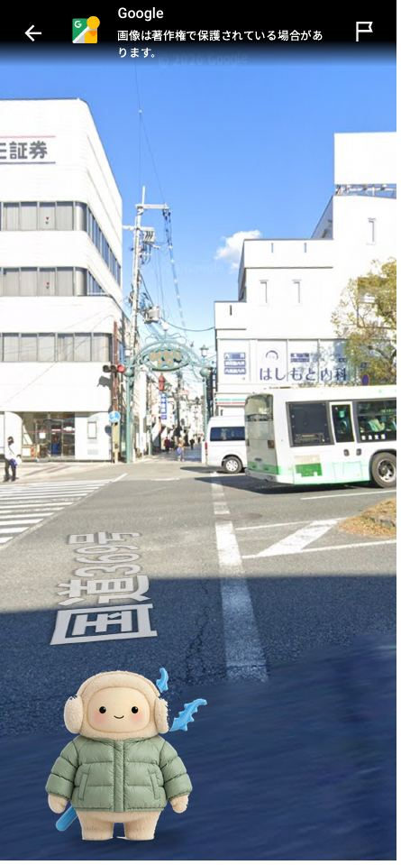
近鉄奈良駅
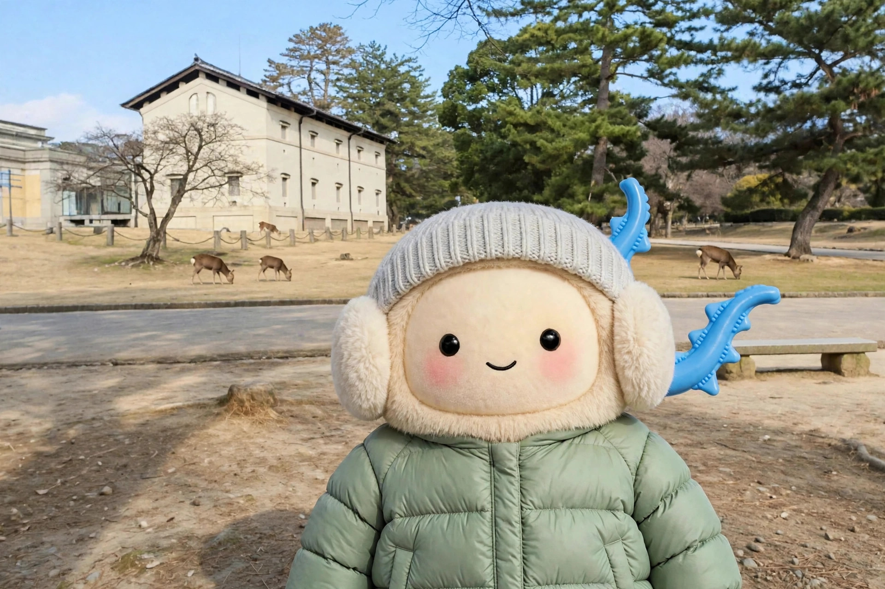
奈良公園の鹿と
食べたもの・買ったもの
- ご当地ちいかわ：奈良限定「鹿」ぬいぐるみキーチェーン
- ご当地グルメ：柿の葉寿司（奈良）
- ご当地ちいかわ：京都限定「抹茶ソフト」うさぎ
- ご当地グルメ：生八つ橋（京都）
収支
| 運賃（近鉄ほか） | 2,580円 |
| 宿泊（自宅） | 0円 |
| 1日目 合計 | 2,580円 |
| 累計 | 2,580円 |
今夜の宿
大阪（自宅）— 0円
2026年11月11日（水）
2日目 兵庫・岡山の旅（岡山泊）
朝9時すぎに上本町を出て、地下鉄とJRを乗り継いで三ノ宮へ。バスでイオンモール神戸北まで足をのばし、ちいかわ POP UP STORE で神戸限定のセーラーちいかわをゲットしました。お昼はそばめしです。
夕方、新神戸から新幹線で岡山へ。岡山駅で岡山限定「桃から生まれた桃太郎」ダイカットキーホルダーを入手し、えびめしを食べて、ヴィアイン岡山にチェックイン。西へ西へと進み始めた日でした。
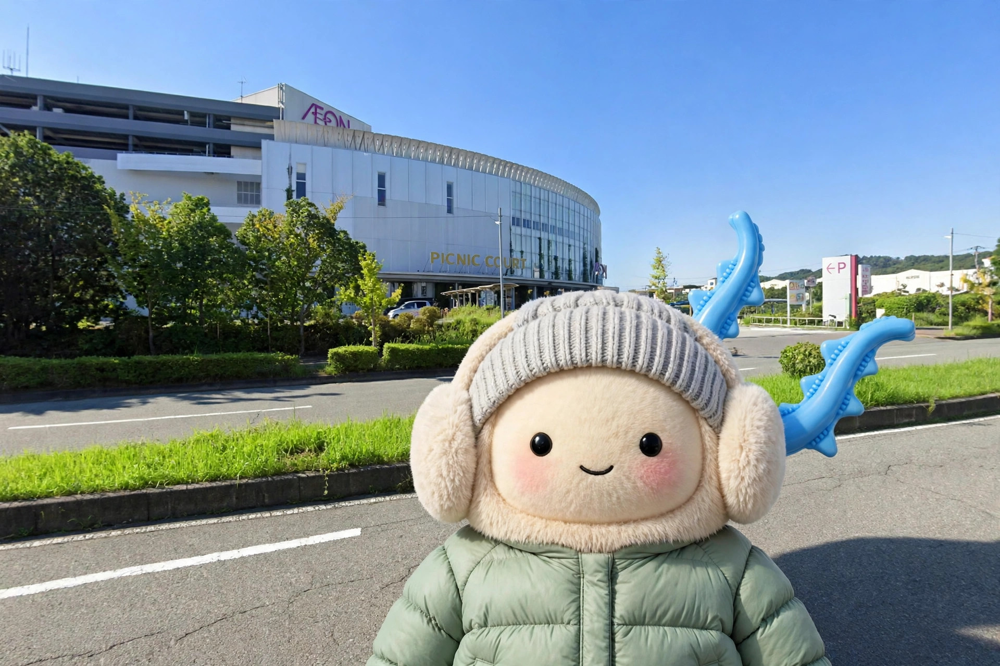
イオンモール神戸北
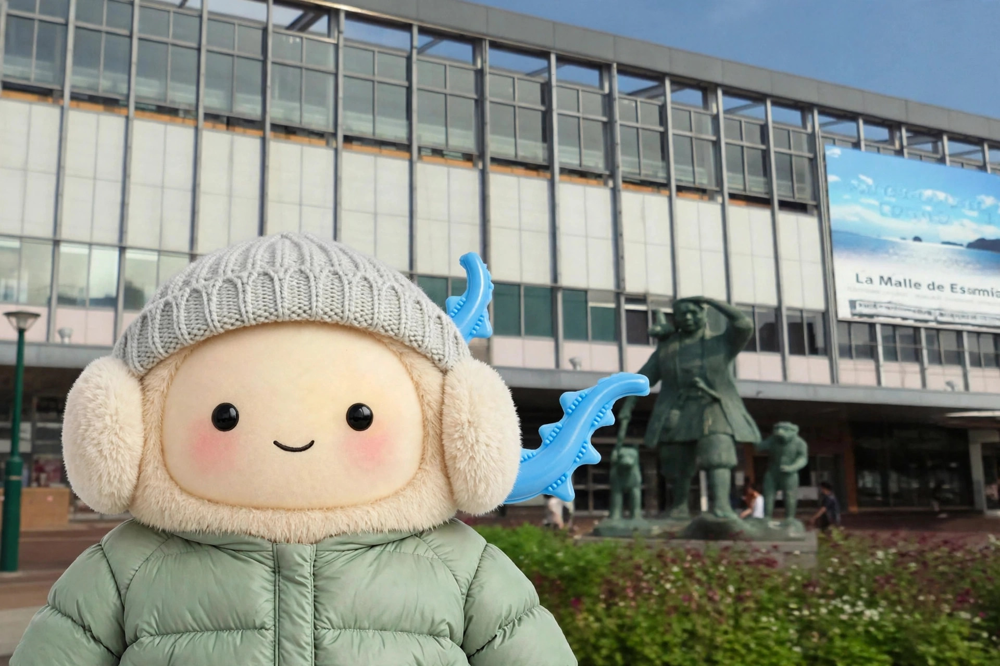
岡山駅
食べたもの・買ったもの
- ご当地ちいかわ：神戸限定 セーラーちいかわ（ちいかわ POP UP STORE、イオンモール神戸北）
- ご当地グルメ：そばめし（神戸）
- ご当地ちいかわ：岡山限定「桃から生まれた桃太郎」ダイカットキーホルダー
- ご当地グルメ：えびめし（岡山）
収支
| 運賃（地下鉄・JR・バス・新幹線） | 8,290円 |
| 宿泊（ヴィアイン岡山） | 5,720円（推定） |
| 2日目 合計 | 14,010円 |
| 累計 | 16,590円 |
今夜の宿
ヴィアイン岡山 — 5,720円（推定）
2026年11月12日（木）
3日目 広島・山口・福岡の旅（博多泊）
岡山を9時04分に出て、新幹線で広島へ。駅の ekie で広島限定「牡蠣」ダイカットキーホルダーをゲットし、広島電鉄で原爆ドームへ。広島風お好み焼きも味わいました。
午後は新山口へ。「ふく」のちいかわは駅で確認できず、山口県はグルメのみの記録に。瓦そばをいただきました。夕方の新幹線で博多に着くと、博多駅で福岡限定「あまおう」ぬいぐるみキーチェーンを入手。夜は博多ラーメンで締めました。3県をまわった、いちばん移動の多い日です。
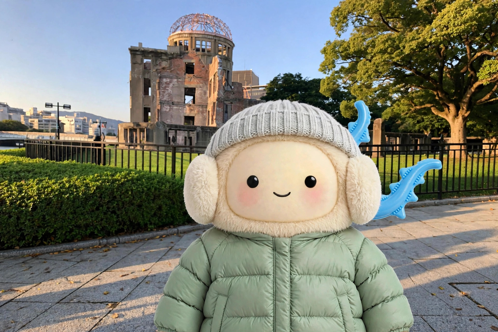
原爆ドーム
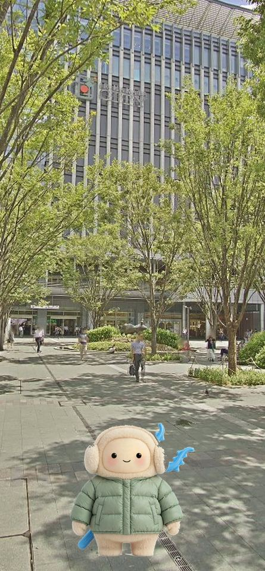
博多駅
食べたもの・買ったもの
- ご当地ちいかわ：広島限定「牡蠣」ダイカットキーホルダー（広島駅 ekie）
- ご当地グルメ：広島風お好み焼き
- ご当地グルメ：瓦そば（山口）※グッズは駅で確認できず、グルメのみ
- ご当地ちいかわ：福岡限定「あまおう」ぬいぐるみキーチェーン（博多駅）
- ご当地グルメ：博多ラーメン
収支
| 運賃（新幹線・広島電鉄ほか） | 18,060円 |
| 宿泊（博多ターミナルホテル） | 5,300円（推定） |
| 3日目 合計 | 23,360円 |
| 累計 | 39,950円 |
今夜の宿
博多ターミナルホテル — 5,300円（推定）
2026年11月13日（金）
4日目 佐賀・長崎の旅（長崎泊）
博多を10時03分に出て、10時41分に佐賀へ。佐賀では いかしゅうまい を堪能しました（佐賀はグルメのみの記録です）。12時33分発のリレーかもめ25号で武雄温泉へ、乗り換えて13時24分に長崎に着きました。
長崎では蘇州林のちゃんぽんを食べて、眼鏡橋をのんびり散策。19時にホテルセントヒル長崎へチェックインしたあと、夜は稲佐山山頂展望台まで上がって夜景を見ました。長崎もグルメのみですが、忘れられない夜になりました。
食べたもの・買ったもの
- ご当地グルメ：いかしゅうまい（佐賀）※グルメのみ
- ご当地グルメ：ちゃんぽん（蘇州林、長崎）※グルメのみ
収支
| 運賃（特急リレーかもめほか） | 6,680円 |
| 宿泊（ホテルセントヒル長崎） | 3,890円（推定） |
| 4日目 合計 | 10,570円 |
| 累計 | 50,520円 |
今夜の宿
ホテルセントヒル長崎 — 3,890円（推定）
2026年11月14日（土）
5日目 熊本の旅（熊本泊）
長崎駅前を10時50分に出る高速バス「りんどう号」に乗り、14時36分に熊本駅前へ。約3時間46分のバス旅でした。熊本では市電に乗って通町筋のくまモンスクエアとアミュプラザくまもとへ。市電の乗り心地がとても良かったです。
肥後よかモン市場などを探しましたが、熊本限定のちいかわグッズは見つからず、熊本県はグルメのみの記録に。熊本ラーメンをいただいて、19時に東横INN熊本駅前へチェックインしました。
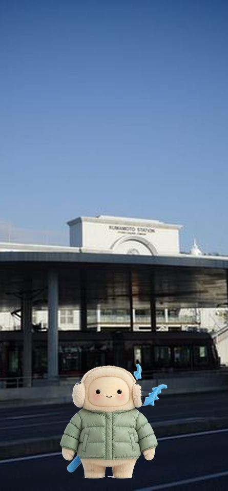
熊本駅
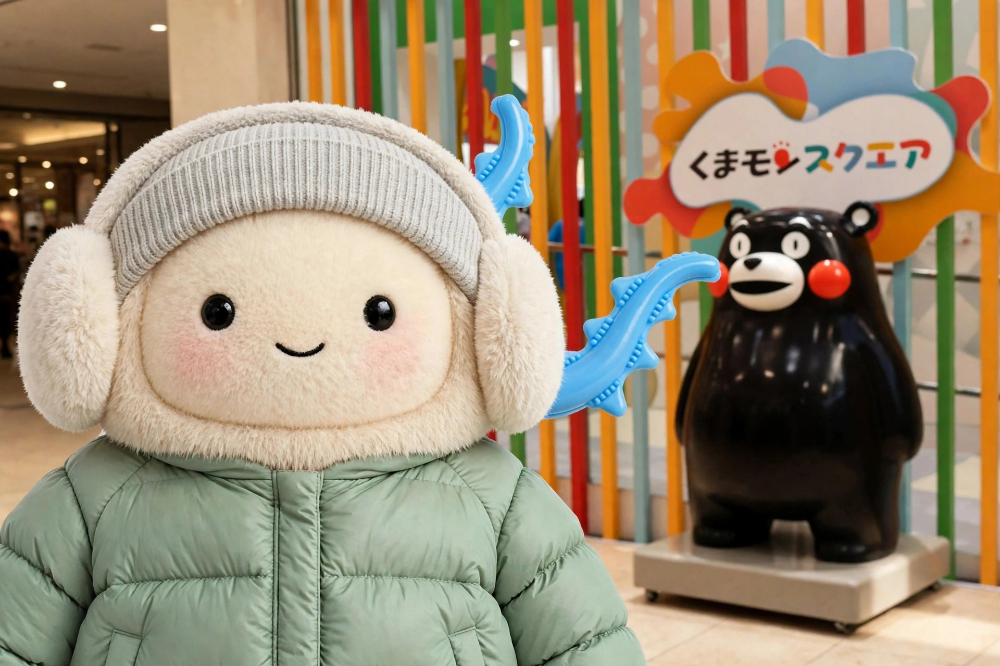
くまモンスクエア
食べたもの・買ったもの
- ご当地グルメ：熊本ラーメン ※グッズは見つからず、グルメのみ
収支
| 運賃（高速バス・市電） | 4,600円 |
| 宿泊（東横INN熊本駅前） | 5,828円（推定） |
| 5日目 合計 | 10,428円 |
| 累計 | 60,948円 |
今夜の宿
東横INN熊本駅前 — 5,828円（推定）
2026年11月15日（日）
6日目 大分の旅（大分泊）
熊本駅前を10時39分に出る高速バス「やまびこ号」で大分へ。途中、道の駅すごうで30分の休憩をはさみ、14時39分に大分に着きました。阿蘇を越える山道のドライブでした。
大分駅の豊後にわさき市場とアミュプラザ大分で温泉モチーフのご当地ちいかわを探しましたが、買える在庫は確認できず、大分県もグルメのみの記録に。夕方は「こつこつ庵」でとり天定食（1,100円）をいただきました。
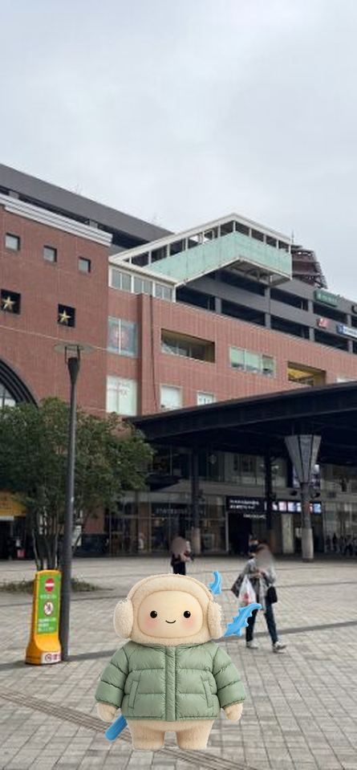
大分駅
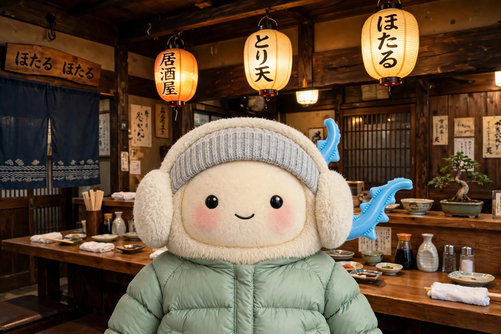
こつこつ庵
食べたもの・買ったもの
- ご当地グルメ：とり天定食（こつこつ庵）— 1,100円 ※グッズは確認できず、グルメのみ
収支
| 運賃（高速バス） | 4,200円 |
| 宿泊（東横INN大分駅前） | 8,100円（推定） |
| 6日目 合計 | 12,300円 |
| 累計 | 73,248円 |
今夜の宿
東横INN大分駅前 — 8,100円（推定）
2026年11月16日（月）
7日目 大分→宮崎の旅（宮崎泊）
大分を10時06分に出る特急「にちりんシーガイア」で、乗り換えなしのまま13時36分に宮崎へ。日豊本線を南へ下る、海の見える区間の多い移動でした。
宮崎駅ではアミュプラザみやざきと、駅高架下のひむかきらめき市場を探しましたが、宮崎限定のちいかわグッズは見つからず、宮崎県もグルメのみの記録に。夕方、味のおぐら本店でチキン南蛮（1,400円）をいただきました。九州はこれで7県すべて到達です。次は鹿児島へ向かいます。
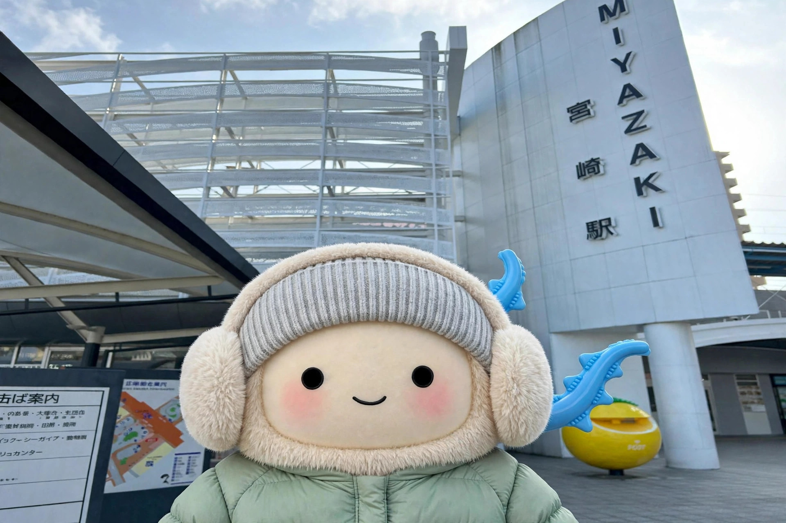
宮崎駅
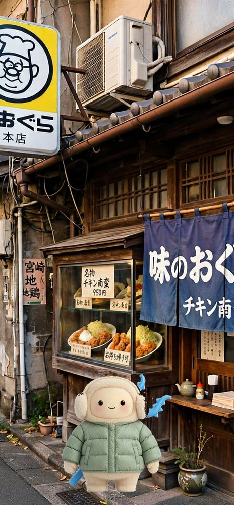
味のおぐら本店
食べたもの・買ったもの
- ご当地グルメ：チキン南蛮（味のおぐら本店）— 1,400円 ※グッズは見つからず、グルメのみ
収支
| 運賃（特急にちりんシーガイア） | 6,910円 |
| 宿泊（東横INN宮崎駅前） | 9,766円（推定） |
| 7日目 合計 | 16,676円 |
| 累計 | 89,924円 |
今夜の宿
東横INN宮崎駅前 — 9,766円（推定）
交通：特急にちりんシーガイアは大分→宮崎を乗り換えなしで運行。この日の記録をもとに、翌11月17日は特急きりしま5号で鹿児島へ出発します。